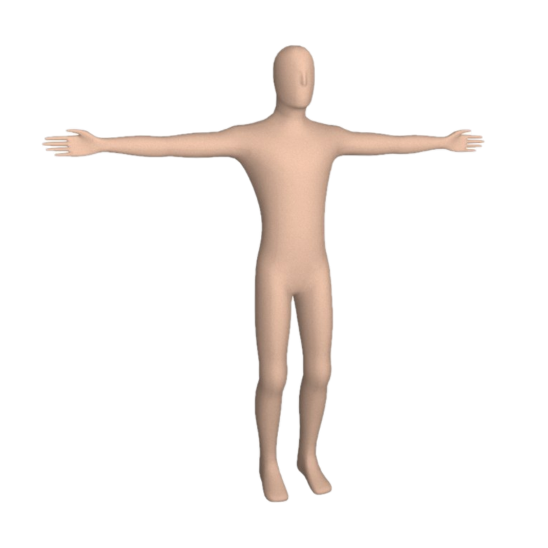

CAPTURAR
Video stream not available.
INSTRUÇÂO
ANALISAR

POSE T
Nesta analise é necessário verificar se a página esta sendo acessado por uma pessoa e não um robo, é necessário que o usuário faça a posição pedida da parte de cima do corpo para a inteligência artificial reconheça que é um humano.